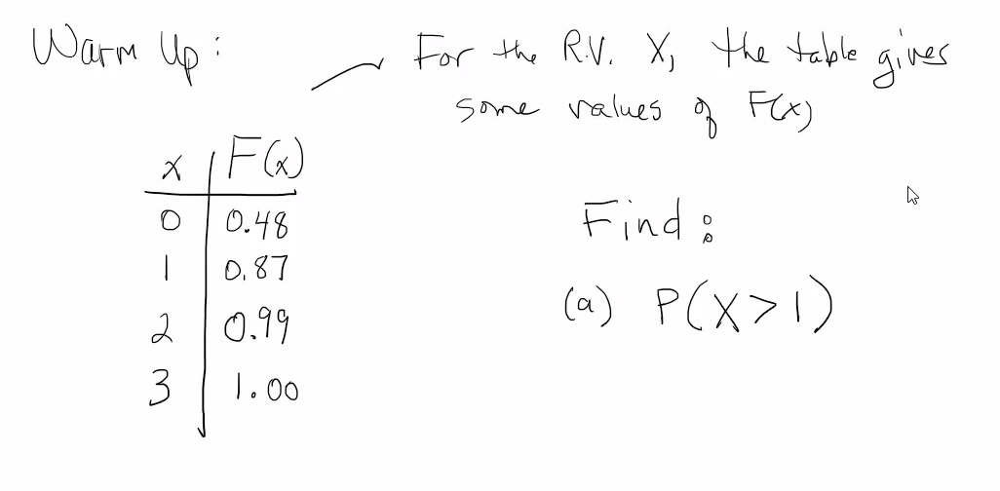
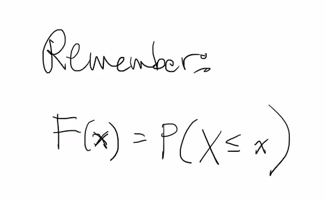
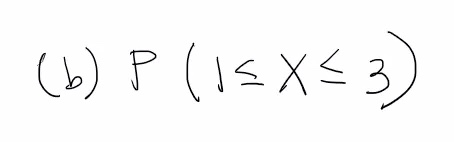
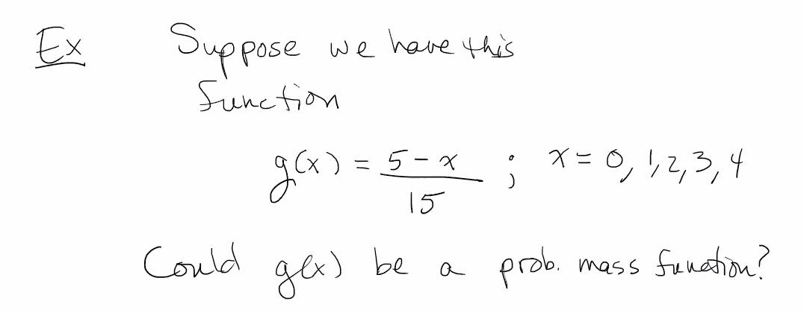
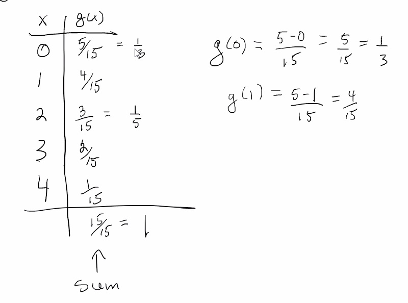
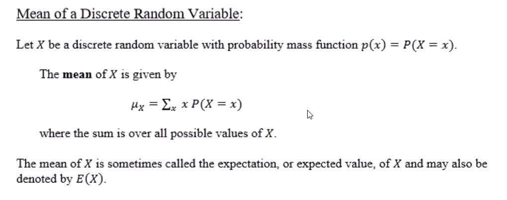
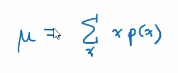
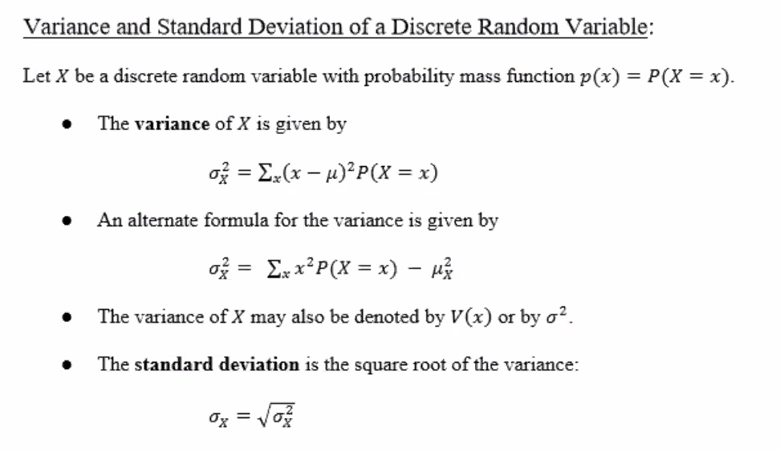
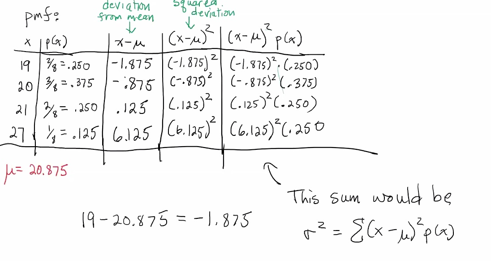
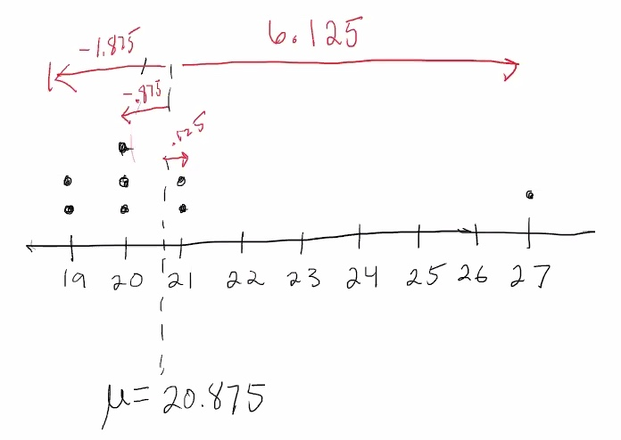

Since the sum of all of the values of

Sometimes we leave off the subscript, and write the sum as:

Mean: for a small finite data set, the mean would simply be an arithmetic average. The mean of a discrete random variable is a generalization of this idea and represents a weighted average.
Consider a population of 8 students with the following ages in years: 19, 20, 20, 19, 21, 27, 20, 21
Say:
| 19 | |
| 20 | |
| 21 | |
| 27 |
Arithmetic average would be:
But in a weighted average:

The variance can also be written as:
The alternate formula for the variance is known as the computing formula.
The mean is a measure of center. The variance and standard deviation are measuresthat indicate how far, on average, an observed value of
Considering the last e.g.:
| 19 | ||||
| 20 | ||||
| 21 | ||||
| 27 |

Note:
The variance is the "mean of the squared deviations".
Standard deviation:
In words: Observations are on average roughly 2.421 years from the mean.
As a dot plot:
